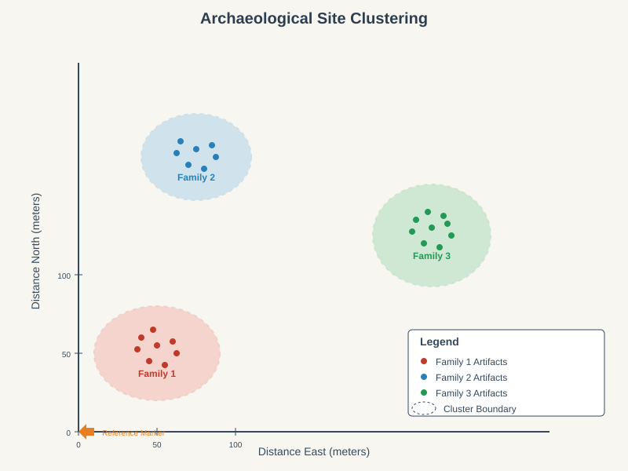
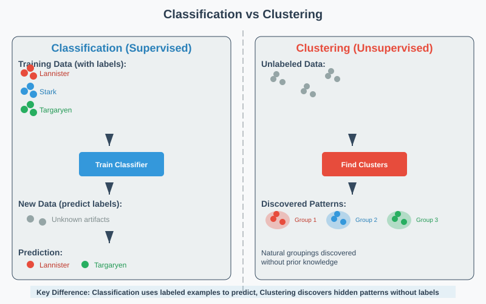
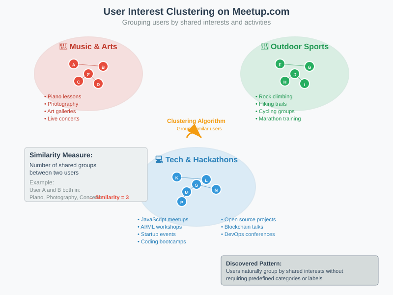
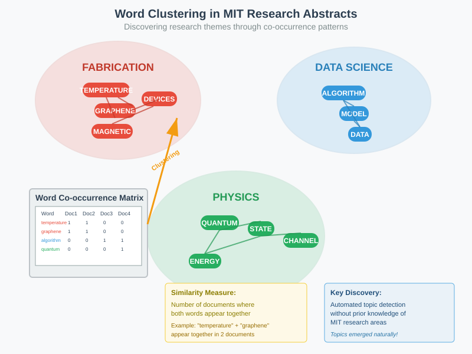

Clustering in Machine Learning: A Comprehensive Guide
🔍 Quick Navigation
- What is Clustering?
- Key Concepts and Terminology
- Classification vs Clustering
- Why and When to Use Clustering
- Real-World Applications
- Challenges in Clustering
- Code Examples and Implementation
- References & Further Reading
What is Clustering?
Clustering is a fundamental technique in unsupervised learning where the goal is to find hidden patterns in data without using labeled examples. Unlike supervised learning, clustering works with unlabeled data to discover natural groupings or structures.
Core Definition
Clustering is the process of grouping data points according to similarity, where each data point belongs to exactly one group called a cluster. The objective is to maximize similarity within clusters while maximizing dissimilarity between different clusters.

Key Components
Data Points: Individual observations or samples in your dataset. In the archaeological example above, each artifact location represents one data point.
Similarity Measure: A metric that defines how "close" or "similar" two data points are. This could be: - Physical distance (Euclidean distance) - Number of shared attributes - Cosine similarity for text data - Custom domain-specific measures
Clusters: Groups of data points that are more similar to each other than to points in other groups.
Mathematical Foundation
Given a dataset \(D = \{x_1, x_2, ..., x_n\}\), clustering aims to partition it into \(k\) clusters \(C = \{C_1, C_2, ..., C_k\}\) such that:
The quality of clustering is often measured by minimizing intra-cluster variance:
where \(\mu_i\) is the centroid of cluster \(C_i\).
Key Concepts and Terminology
Exploratory Data Analysis (EDA)
Clustering serves as a powerful tool for Exploratory Data Analysis when you have data but aren't sure what patterns might exist. This approach helps researchers and analysts discover unexpected insights without preconceived hypotheses.
Similarity and Distance Metrics
The choice of similarity measure fundamentally affects clustering results:
Euclidean Distance: \(d(x,y) = \sqrt{\sum_{i=1}^{n}(x_i - y_i)^2}\)
Manhattan Distance: \(d(x,y) = \sum_{i=1}^{n}|x_i - y_i|\)
Cosine Similarity: \(\text{sim}(x,y) = \frac{x \cdot y}{||x|| \cdot ||y||}\)
Types of Data in Clustering
Clustering can handle various data types:
- Numerical Data: Geographic coordinates, sensor readings, financial metrics
- Categorical Data: User preferences, product categories, demographic information
- Text Data: Documents, research abstracts, social media posts
- Mixed Data: Combining multiple data types with appropriate distance measures
Classification vs Clustering
Understanding the distinction between classification and clustering is crucial for choosing the right approach for your problem.

Key Differences
| Aspect | Classification | Clustering |
|---|---|---|
| Learning Type | Supervised | Unsupervised |
| Labels | Available during training | No labels provided |
| Goal | Predict labels for new data | Discover hidden patterns |
| Evaluation | Accuracy, precision, recall | Silhouette score, inertia |
| Complexity | Generally easier with labels | More challenging without guidance |
When Labels Are Available vs Unavailable
Classification Scenario: In our archaeological example, if we had pottery with family sigils (Lannister, Stark, Targaryen), we could train a classifier to identify which family made each artifact based on location and characteristics.
Clustering Scenario: Without any identifying marks, we must discover family groupings purely from artifact locations and similarities, hoping that spatial clustering reveals meaningful family territories.
The Label Acquisition Challenge
Labels may be unavailable because:
- Cost: Manual labeling is expensive and time-consuming
- Dynamic Nature: Categories change faster than labeling can keep up (news topics, trends)
- Scale: Datasets too large for human annotation
- Unknown Categories: Don't know what groups exist beforehand
Why and When to Use Clustering
Primary Use Cases
1. Exploratory Data Analysis
When you have data but no clear analysis direction, clustering helps reveal natural structures and patterns that suggest further investigation avenues.

Example: Meetup.com user analysis where each user is represented by their group memberships. Clustering might reveal communities interested in: - Musical performance and arts - Outdoor sports and adventure - Technology and hackathons - Professional networking
2. Topic Discovery and Content Organization

Example: MIT researchers analyzed computer science abstracts and discovered natural word groupings: - Fabrication: temperature, graphene, devices, magnetic - Data Science: algorithm, model, data - Physics: quantum, state, channel, energy
This automated topic discovery required no prior knowledge of research areas.
3. Dynamic Content Categorization
Google News Example: News topics change daily, making pre-defined categories insufficient. Clustering automatically groups articles about: - Breaking news events - TV show episodes (Game of Thrones) - Unexpected viral events - Seasonal topics
When Clustering is Preferred Over Classification
- Unknown Category Structure: Don't know how many or what types of groups exist
- Rapidly Changing Categories: Labels become outdated quickly
- Large-Scale Data: Manual labeling is impractical
- Pattern Discovery: Goal is exploration, not prediction
Real-World Applications
Business and Marketing
- Customer Segmentation: Group customers by purchasing behavior, demographics, or engagement patterns
- Market Research: Identify consumer preferences and product positioning opportunities
- Recommendation Systems: Group users or items to improve collaborative filtering
Scientific Research
- Genomics: Cluster genes by expression patterns or functional similarity
- Astronomy: Group celestial objects by spectral characteristics
- Psychology: Identify personality types or behavioral patterns
Technology and Web
- Search Engines: Cluster web pages by topic for better organization
- Social Networks: Detect communities and social groups
- Computer Vision: Group similar images or visual features
Document and Text Analysis
- Literature Review: Organize research papers by topic
- Legal Documents: Group cases by legal precedent or topic
- Social Media: Analyze trending topics and sentiment clusters
Challenges in Clustering
High-Dimensional Data

As data dimensionality increases, clustering becomes more challenging due to:
Curse of Dimensionality: In high dimensions, all points appear equally distant, making similarity measures less meaningful.
Computational Complexity: Processing time and memory requirements grow exponentially.
Visualization Difficulties: Cannot easily plot or interpret results in high-dimensional spaces.
Common Clustering Challenges
1. Choosing the Right Number of Clusters
Methods for determining optimal cluster count: - Elbow Method: Plot within-cluster sum of squares vs. number of clusters - Silhouette Analysis: Measure how well-separated clusters are - Gap Statistic: Compare clustering performance to random data
2. Handling Different Data Types
- Mixed Data: Requires specialized distance measures like Gower distance
- Categorical Data: Need appropriate similarity measures (Jaccard, Hamming)
- Text Data: Requires preprocessing (TF-IDF, word embeddings)
3. Scalability Issues
- Large Datasets: May require sampling or distributed computing approaches
- Real-time Clustering: Need efficient online algorithms
- Memory Constraints: Large distance matrices may not fit in memory
4. Evaluation Difficulties
Without ground truth labels, evaluating clustering quality is challenging: - Internal Measures: Silhouette score, Davies-Bouldin index - External Measures: If some labels available (Adjusted Rand Index) - Domain Expertise: Manual inspection by subject matter experts
Code Examples and Implementation
Basic K-Means Clustering

import numpy as np
import matplotlib.pyplot as plt
from sklearn.cluster import KMeans
from sklearn.datasets import make_blobs
# Generate sample data
X, y_true = make_blobs(n_samples=300, centers=4, cluster_std=0.60, random_state=0)
# Apply K-Means clustering
kmeans = KMeans(n_clusters=4, random_state=0)
y_pred = kmeans.fit_predict(X)
# Visualize results
plt.figure(figsize=(12, 5))
plt.subplot(1, 2, 1)
plt.scatter(X[:, 0], X[:, 1], c=y_true, cmap='viridis', alpha=0.7)
plt.title('True Clusters')
plt.subplot(1, 2, 2)
plt.scatter(X[:, 0], X[:, 1], c=y_pred, cmap='viridis', alpha=0.7)
plt.scatter(kmeans.cluster_centers_[:, 0], kmeans.cluster_centers_[:, 1],
c='red', marker='x', s=200, linewidths=3)
plt.title('K-Means Clustering Results')
plt.show()
Text Clustering Example
from sklearn.feature_extraction.text import TfidfVectorizer
from sklearn.cluster import AgglomerativeClustering
from sklearn.metrics.pairwise import cosine_similarity
# Sample documents
documents = [
"Machine learning algorithms for classification",
"Deep neural networks and artificial intelligence",
"Quantum computing and quantum algorithms",
"Natural language processing with transformers",
"Computer vision and image recognition",
"Quantum mechanics and quantum physics"
]
# Convert text to TF-IDF vectors
vectorizer = TfidfVectorizer(stop_words='english')
X = vectorizer.fit_transform(documents)
# Apply hierarchical clustering
clustering = AgglomerativeClustering(n_clusters=3, linkage='average')
labels = clustering.fit_predict(X.toarray())
# Display results
for i, (doc, label) in enumerate(zip(documents, labels)):
print(f"Cluster {label}: {doc}")
Advanced Clustering with Multiple Features
import pandas as pd
from sklearn.preprocessing import StandardScaler
from sklearn.cluster import DBSCAN
from sklearn.decomposition import PCA
# Example: Customer segmentation
def customer_clustering(data):
# Prepare features
features = ['age', 'income', 'spending_score', 'purchase_frequency']
X = data[features]
# Standardize features
scaler = StandardScaler()
X_scaled = scaler.fit_transform(X)
# Apply DBSCAN clustering
dbscan = DBSCAN(eps=0.5, min_samples=5)
clusters = dbscan.fit_predict(X_scaled)
# Reduce dimensionality for visualization
pca = PCA(n_components=2)
X_pca = pca.fit_transform(X_scaled)
return clusters, X_pca
# Evaluate clustering quality
def evaluate_clustering(X, labels):
from sklearn.metrics import silhouette_score, davies_bouldin_score
if len(set(labels)) > 1: # Need at least 2 clusters
silhouette_avg = silhouette_score(X, labels)
davies_bouldin = davies_bouldin_score(X, labels)
print(f"Silhouette Score: {silhouette_avg:.3f}")
print(f"Davies-Bouldin Score: {davies_bouldin:.3f}")
else:
print("Only one cluster found!")
References & Further Reading
📚 Essential Papers and Books
- "Pattern Recognition and Machine Learning" - Christopher Bishop
-
Comprehensive coverage of clustering algorithms and theory
-
"The Elements of Statistical Learning" - Hastie, Tibshirani, Friedman
-
Mathematical foundations and advanced clustering techniques
-
"Cluster Analysis: Basic Concepts and Algorithms" - Tan, Steinbach, Kumar
- Practical guide to clustering methods and applications
🔬 Research Papers
- "A Tutorial on Spectral Clustering" - Ulrike von Luxburg (2007)
-
"Clustering by Fast Search and Find of Density Peaks" - Rodriguez & Laio (2014)
-
Science Vol. 344, revolutionary density-based clustering approach
-
"Mean Shift: A Robust Approach Toward Feature Space Analysis" - Comaniciu & Meer (2002)
- IEEE Transactions on Pattern Analysis and Machine Intelligence
🔧 Tools and Libraries
- Scikit-learn Clustering Documentation
-
Hugging Face Clustering Models
- https://huggingface.co/models?pipeline_tag=clustering
📊 Additional Resources
- Stanford CS229 Lecture Notes on Unsupervised Learning
- Andrew Ng's Machine Learning Course (Clustering sections)
- Google Colab Clustering Tutorials - Interactive notebooks for hands-on learning
Created with ❤️ for the machine learning community